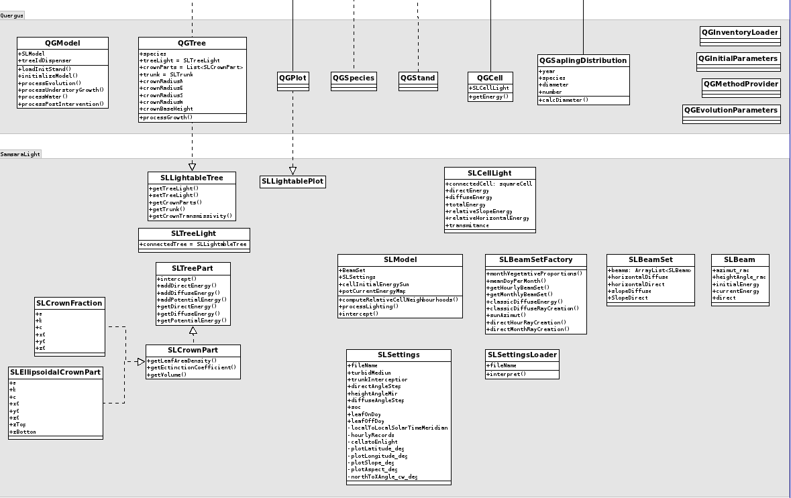
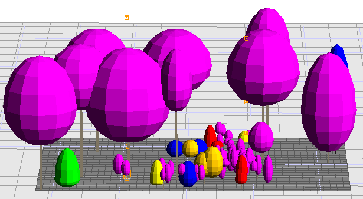
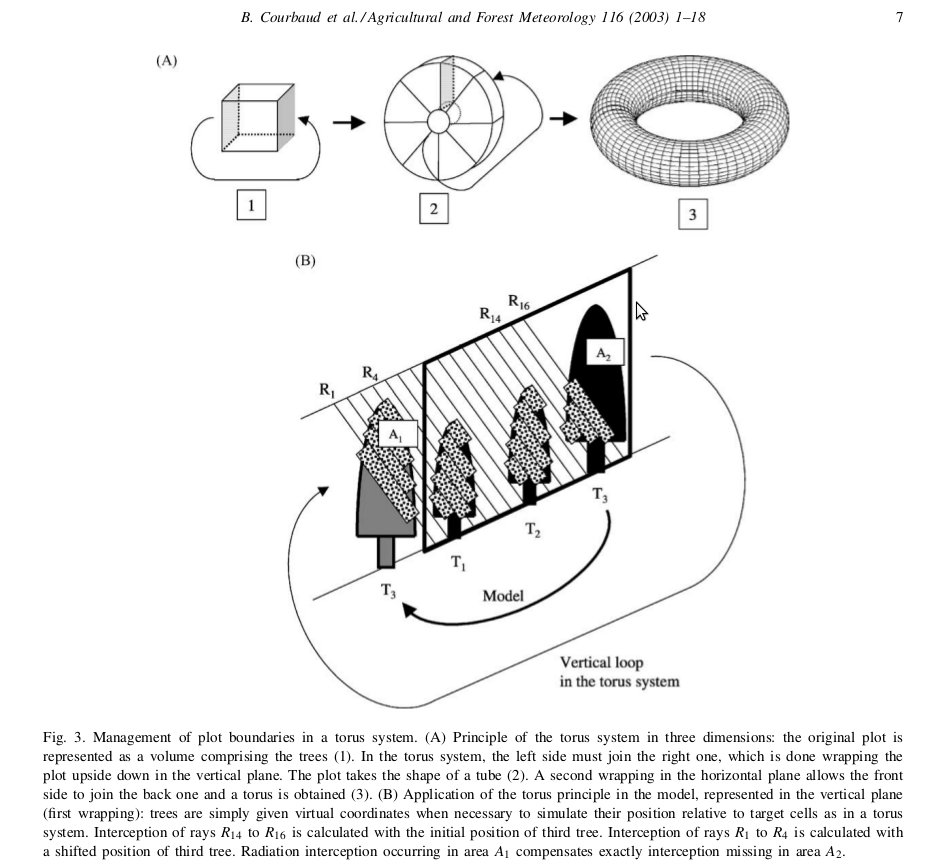

start => help_en
SamsaraLight
Introduction
SamsaraLight is a library implementing the radiative balance of the Samsara model. This library was written in 2008 by Benoit Courbaud (IRSTEA Grenoble), Nicolas Dones (INRA Clermont-Ferrand) and François de Coligny (Capsis). In 2012, new features have been added by Benoit Courbaud (IRSTEA Grenoble), Gauthier Ligot (Ulg Belgium), Mathieu Jonard (UCL Belgium) and, of course, François de Coligny (Capsis).
Suggestions and TODO list
Implement computation of above canopy radiations without climate data. Some users are only interested in relative values of transmitted light and do not need accurate absolute values.
Implement virtual sensors that can be placed in any location within the stand and measure amounts of transmitted light
Crown reconstruction, see Piboule et al. (2005), AFS
Verify equation for the share of energy between simulated beams
Diffuse energy can be computed with UOC (b=0) and SOC (b=2) algorithm. Some studies have however showed that b=1.23 might be more suitable.
Correction of the computation of potential energy at tree level (see L558 in SLModel)
correction of the energy associated to the beam with zenithal angle lower than the minimum zenithal angle.
Library structure
The below figure introduces the structure of SamsaraLight library and its implementation with Quergus. This figure will be (and need to be) updated…

The core of the library is certainly the procedure processLighting() of SLModel class. Prior to its execution, a beamset is created with the SLBeamSetFactory class. It groups together direct and diffuse beams that are traced for each ground cell. Next, for each cell and ray, trees (and part of trees) that could potentially intercept ray are selected. Interceptions with ray are tested solving equation systems (interception between ellipsoid and a line). Intercepted tree parts (crown parts and trunks) are stored and sorted along the ray in SLInterceptionItem object. Then ray energy is decremented using either the turbid medium hypothesis or the porous envelop hypothesis. Intercepted energy (direct, diffuse, total with or without a slope correction) is then stored in each intercepted items (cell, crown parts, trunks, …).
SamsaraLight has only two interfaces that module must implements : SLLightableTree, which makes the connection with the SLTreeLight object, and SLLightableCell for the connection with SLCellLight. Nevertheless modules must instantiate SLCellLight, SLTreeLight, SLTreePart, SLModel and load some settings. Some of the settings can straightly be loaded using the SLSettingLoader while other settings (plot settings like the latitude) must be set within modules.
Model configuration
The settings of samsaraLight are all defined in SLSettings. Radiation details are loaded from a text file, while plot attibutes are set by modules.
Module settings
plotLatitude : plot latitude in degree
plotLongitude : plot longitude in degree
plotSlope : height angle of slope in degree (0° is a horizontal plot, 90° is a vertical plot)
plotAspect: clock wise angle from the north to an axis parallel to the slope and going downward. It corresponds to the slope azimut looking downward.
northToXAngle_cw : clock wise angle (degree) from the north to the x axis. It corresponds to the azimuth measuring looking towards the positive x axis. If the x and y axis are respectively oriented eastward and northward, this angle equals 90°.
Code example from Quergus.QGInventoryLoader :
SLSettings samsaraSettings = model.getSLModel().getSettings();
//...
samsaraSettings.setPlotLatitude_deg(p.lattitude);
samsaraSettings.setPlotLongitude_deg(p.longitude);
samsaraSettings.setNorthToXAngle_cw_deg(90d) ;
samsaraSettings.setPlotSlope_deg(p.slope);
samsaraSettings.setPlotAspect_deg(p.aspect);
Text file settings
The text file has two main parts. The first part contains keywords and associated values:
turbid_medium = true
trunk_interception = false
direct_angle_step = 5
height_angle_min = 10
diffuse_angle_step = 15
soc = true
GMT = 1
leaf_on_doy = 40
leaf_off_doy = 250
turbid_medium : if true, radiation transfer use the turbid medium hypothesis (Beer's law). If false, radiation interception is computed using the porous envelop hypothesis.
trunk_interception : If true, the interception by trunks is enabled. Radiation interception by cell (or regeneration) is reduced when this option is enabled.
direct_angle_step : Step angle use to create direct beams in degree if radiations are next given monthly. 15° correspond to a step of one hour. A 5° step should be preferred? This option has no effect if radiations are next given with the hourly format.
height_angle_min : the minimum height angle of beams, i.e. the minimum angle between a horizontal plane and the beam.
diffuse_angle_step : Step angle use to create diffuse beamset in degree. 15° correspond a step of one hour.
soc : If true, the standard overcast sky algorithm is used to create diffuse beams (beams with an elevation angle close to the zenith, have greater energy). If false, the Uniform Overcast Sky algorithm is used.
GMT : correction between meridian standard time and the nearest standard meridian time. In France the nearest standard meridian time is the Greenwich time or the universal time. Nevertheless the legal time corresponds to GMT+1 (GMT = 1) during the winter and GMT+2 (GMT=2) during the summer. If GMT=0 then the user must give the local time (corresponding to the nearest standard meridian). The procedure has not been tested for countries other than France and Belgium though! GMT value is used only with hourly radiation records. It is not used with monthly radiation records.
leaf_on_doy : day of year corresponding to the beginning of the vegetative period
leaf_off_doy : day of year corresponding to the end of the vegetative period
The second part of this file contains a table with global radiations and the ration between diffuse and global energy. These meteorological informations can have two format : namely monthly and hourly format. With the monthly format, the table has three columns : month number, global radiation in MJ/m2 and the diffuse to global ratio. This table must contain 12 lines, i.e. one per month. But only days within the vegetative period and with an energy above 0 will be used in the simulations. For example, this part might be :
#Month Global Diffus/G
1 71.27760 0.5
2 127.8588 0.5
3 312.6255 0.5
4 415.0542 0.5
5 533.9946 0.5
6 421.6902 0.5
7 425.8980 0.5
8 345.9888 0.5
9 302.9040 0.5
10 181.0038 0.5
11 103.2462 0.5
12 64.91820 0.5
With the hourly format, the table has five columns : month number, day number, hour, global radiation in MJ/m2 and the diffuse to global ratio. The file must contain records for every hour of one year. But only days within the vegetative period and with an energy above 0 will be used in the simulations. Watch out that every hour must correspond to a unique meridian. On other words, use only the winter or summer time. Do not use both in the same file!. For example, the first lines look like :
#Month Day Hour global (MJ/m²) diffus/global
1 1 0 0 0.5
1 1 1 0 0.5
1 1 2 0 0.5
1 1 3 0 0.5
1 1 4 0 0.5
1 1 5 0 0.5
1 1 6 0 0.5
1 1 7 0 0.5
1 1 8 0 0.5
1 1 9 0.0222 0.5
1 1 10 0.0492 0.5
1 1 11 0.0978 0.5
1 1 12 0.1626 0.5
1 1 13 0.2052 0.5
1 1 14 0.2454 0.5
1 1 15 0.1278 0.5
1 1 16 0.033 0.5
1 1 17 0 0.5
1 1 18 0 0.5
1 1 19 0 0.5
1 1 20 0 0.5
1 1 21 0 0.5
1 1 22 0 0.5
1 1 23 0 0.5
1 2 0 0 0.5
1 2 1 0 0.5
1 2 2 0 0.5
1 2 3 0 0.5
1 2 4 0 0.5
1 2 5 0 0.5
1 2 6 0 0.5
1 2 7 0 0.5
1 2 8 0.0042 0.5
...
Model functioning
For each ground cell, many beams are created and traced from the hemisphere toward the cell. Those beams are grouped together in a set of beams which is created in the beginning of the simulation. Every beam as an azimut, an elevation angle (or height angle) and diffuse or direct energy.

Diffuse rays
Diffuse rays are created at regular intervals of height angle and azimuth. The intervals is given in the settings : diffuse_angle_step (say DAS). Those two angles vary from DAS/2 to PI/2.
The total diffuse energy (sum (global*Diffus/global)) is distributed between rays according to the standard overcast sky or the uniform overcast sky method.
double energy;
double meridianNb = 2 * Math.PI / diffuseAngleStep_rad;
double heightAInf = heightAngle_rad - diffuseAngleStep_rad / 2;
double sinInf = Math.sin(heightAInf);
double heightASup = heightAngle_rad + diffuseAngleStep_rad / 2;
double sinSup = Math.sin(heightASup);
if (SOC == false) { // Uniform Overcast Sky, per square meter of a
// horizontal plan
energy = (2 * totalDiffuse / meridianNb) * (sinSup * sinSup - sinInf * sinInf) / 2;
} else { // Standard Overcast Sky, Energy per square meter of a
// horizontal plan
energy = (6 * totalDiffuse / (7 * meridianNb)) * ((Math.pow(sinSup, 2) - Math.pow(sinInf, 2)) / 2 + 2 * (Math.pow(sinSup, 3) - Math.pow(sinInf, 3)) / 3);
}
// in MJ/m2 on a plane perpendicular to the ray
energy = energy / Math.sin(heightAngle_rad);
Later on only rays with height angle greater than the minimum height angle (height_angle_min) and that do not intercept the ground (with sloping plot) are used.
// A beam is created only if it reaches the soil with an angle >
// angleMin the cosinus of the angle between the vector
// orthogonal to slope and the beam must be higher than
// sin(angleMin) this cosinus is given by scalar
double scalar = Math.cos(slope_rad) * Math.sin(heightAngle_rad)
+ Math.sin(slope_rad) * Math.cos(heightAngle_rad)
* Math.cos(azimut - bottomAzimut_rad);
if (scalar > Math.sin(angleMin_rad)) //...
Direct rays
The computation process differs with the format use in the settings to define the radiations (hourly or monthly format, see in the setting section). Next, similarly to diffuse radiation, only direct beams with height angle greater than the minimum height angle (height_angle_min) and that do not intercept the ground (with sloping plot) are traced.
The hourly radiation procedure has the advantage to avoid calculating how direct energy is shared between rays. Nevertheless, the procedure to compute the sun's position is litle more complicated and less precise.
Monthly radiation
For each month with direct energy above 0 MJ/m2, beams are created at regular intervals of hour angle according to the direct_angle_step (say BAS, Beam angle step). Their hour angle vary from BAS/2 to PI/2. For each month, simulation is therefore perfomed only for one day. The total direct energy is shared between direct rays according to the sinus of their hour height angle and day height angle.
heightAngle_rad = Math.asin(Math.sin(latitude_rad) * Math.sin(declination_rad[i])
+ Math.cos(latitude_rad)* Math.cos(declination_rad[i])* Math.cos(hourAngle));
azimut_rad = sunAzimut(latitude_rad, declination_rad[i],hourAngle, heightAngle_rad, southAzimut_rad);
double hourSinHeightAng = Math.sin(latitude_rad)* Math.sin(declination_rad[i])* angleStep_rad
+ Math.cos(latitude_rad)* Math.cos(declination_rad[i])* (Math.sin(hourAngle + angleStep_rad / 2)
- Math.sin(hourAngle - angleStep_rad / 2));
// in MJ/m2 on a horizontal plane
energy = directEnergy[i] * hourSinHeightAng/ daySinHeightAng;
Hourly radiation
Direct rays are created at regular intervals of one hour angle from 00:30 to 23:30. It corresponds to hourly meteorological records. For each month, only one representative day is simulated (see SLBeamFactory.meanDoyPerMonth()). And hourly energy are computed as the sum per hour of every month record (E_h_m = sum_d E_d_h_m, with d, h and m the indices of hour, day and month).
To direct beam, the sun's position need to be computed. It depends on the plot location and the local hour system. In order to take into account the difference between the mean solar time and the apparent solar time, a correction is implemented using en empirical equation of time (daily variation).
Some explanation of the below code :
eot is the equation of time
B is an angular transformation of the day number
If it's 12:00 during the winter (GMT+1, winter time) in Belgium, then the local time corresponding to the nearest meridian (= greenwich meridian for belgium) is 11:00. The local time takes in account that the plot is not exactly on the standard meridian. The local time for a plot at longitude =5° is : meridian time + (5-0)/15 = 11:19:48.
To compute the local solar time, we add estimates of the equation of time to the local time.
int stdLongitude = (int) (longitude_rad / (Math.PI / 12)); // standard meridian
double B = 2 * Math.PI * meanDoy[m] / 365.242; //wikipedia
double eot = -7.657 * Math.sin(B) + 9.862 * Math.sin(2*B + 3.599); //minutes, wikipedia
double localTime = - GMT + h + 0.5 + (longitude_rad - stdLongitude) / Math.PI*12; //hour
double localSolarTime = localTime + eot/60 ;
double hourAngle = Math.PI / 12 * (localSolarTime - 12);
heightAngle_rad = Math.asin(Math.sin(latitude_rad) * Math.sin(declination_rad[m])
+ Math.cos(latitude_rad)* Math.cos(declination_rad[m])* Math.cos(hourAngle));
azimut_rad = sunAzimut(latitude_rad, declination_rad[m],hourAngle, heightAngle_rad, southAzimut_rad);
Radiation transfer
Two approaches are implemented in SamsaraLight to simulate the transmission of ray light through the canopy, namely the turbid medium and the porous envelop approaches. Only one approach can be used at a time. This is set in the setting file.
Turbid medium
The Beer's law is used to predict the transmission of a monochromatic ray through an homogeneous medium. In such medium, the transmission depends on the light travel length inside the medium, the medium density and a coefficient of absorption (http://en.wikipedia.org/wiki/Beer%E2%80%93Lambert_law).
One way to predict light transmission through canopy is to consider it as a turbid medium for which the coefficient of absorption is a function of the leaf area density. Typically :
$ \frac{I}{I_0} = exp(- k \Omega LAD) $
where k is the coefficient of extinction that depends on the orientation and spatial distribution of leaves and branches. A clumping factor (omega) might be added to take into account the aggregation of leaves and breanches within crowns. This is implemented is SLModel:
double leafAreaDensity = ((SLCrownPart) treePart).getLeafAreaDensity();
double extinctionCoef = ((SLCrownPart) treePart).getExtinctionCoefficient();
currentEnergy -= interceptedE;
double interceptedE = currentEnergy * (1 - Math.exp(-extinctionCoef * clumpingFactor * leafAreaDensity * item.getPathLength()))
Porous envelop
As turbid medium model might be difficult to calibrate, we have implemented a porous envelop approach. Crowns can be considered as porous envelop with a fixed transmissivity (I/I0) that does not depends on the light travel distance through the crown. The transmissivity is given by SLLightableTree and is used in SLModel:
double transmissivity = lightableTree.getCrownTransmissivity();
double interceptedE = (1 - transmissivity) * currentEnergy;
Tree description
Canopy
Two different crown representations are implemented in SamsaraLight : SLEllipsoidalCrownPart and SLCrownFraction.
Ellipsoidal Crown Part
The simplest is SLEllipsoidalCrownPart used one ellipsoid or two truncated ellipsoids. Truncated ellipsoids can be characterized with possibly different semi-axes : a, b and c. a, b, and c are respectively the semi-axis in East-West, Nort-South, bottom-top direction. They are positive. However the two ellispsoids share a common centre (x,y,z). z is typically the height of the maximum extension of crown. x and y are often the tree coordinates but it can be different (ex. With asynmetric crown). The constructor of SLEllipsoidalCrownPart is different for the creation of a single ellipsoid and for truncated ellipsoids. In the latter case, an additional boolean parameter is added to precise whether the crown part is the upper part.
The leaf area density and the coefficient of extinction need to be set after the creation of each crown parts if the turbid medium hypothesis is used.
The below code produces crown represented with only one ellipsoids :
double a = (crownRadiusN+crownRadiusS)/2;
double b = (crownRadiusE+crownRadiusW)/2;
double c = (height - crownBaseHeight) / 2d;
double xp = x;
double yp = y;
double zp = z + crownBaseHeight + c;
SLCrownPart p = new SLEllipsoidalCrownPart(xp, yp, zp, a, b, c); //constructor for one ellipsoid
p.setLeafAreaDensity(2);
p.setExtinctionCoefficient(0.5);
crownParts = Collections.singletonList(p);
Here is another and more complex example :
double a = (crownRadiusN+crownRadiusS)/2;
double b = (crownRadiusE+crownRadiusW)/2;
double c = (height - CrownMaxExtension);
double xp = x;
double yp = y;
double zp = z + crownBaseHeight + c;
SLCrownPart p = new SLEllipsoidalCrownPart(xp, yp, zp, a, b, c, true); //constructor for the upper ellipsoid
p.setLeafAreaDensity(0.5);
p.setExtinctionCoefficient(0.5);
crownParts.add(p);
//a second and different ellipsoid
c = (CrownMaxExtension - crownBaseHeight) ;
SLCrownPart p = new SLEllipsoidalCrownPart(xp, yp, zp, a, b, c, false); //constructor for the lower ellipsoid
p.setLeafAreaDensity(2);
p.setExtinctionCoefficient(0.5);
crownParts.add(p);
Crown Fraction
With SLCrownFraction crowns are divided in 8 parts. Each part has 6 parameters : three for the center coordinates et three semi-axes. The semis axis can be negative or positive depending on the part position within the crown. As previously, the leaf area density and the coefficient of extinction can be defined for every crown part. For example, parts located in the above the center has a vertical semi-axes that is positive. Those located below has a vertical semi-axis that is negative.
double x0 = x; //x, y, z are tree coordinates
double y0 = y;
double z0 = z + largestCrownExtensionheight;
double rup = height - largestCrownExtensionheight;
double rdown = largestCrownExtensionheight - CrownBaseHeight;
f1 = new SLCrownFraction(x0, y0, z0, reast, rnorth, rup);
f2 = new SLCrownFraction(x0, y0, z0, reast, -rsouth, rup);
f3 = new SLCrownFraction(x0, y0, z0, -rwest, -rsouth, rup);
f4 = new SLCrownFraction(x0, y0, z0, -rwest, rnorth, rup);
f5 = new SLCrownFraction(x0, y0, z0, reast, rnorth, -rdown);
f6 = new SLCrownFraction(x0, y0, z0, reast, -rsouth, -rdown);
f7 = new SLCrownFraction(x0, y0, z0, -rwest, -rsouth, -rdown);
f8 = new SLCrownFraction(x0, y0, z0, -rwest, rnorth, -rdown);
f1.setLeafAreaDensity(1);
f2.setLeafAreaDensity(1);
f3.setLeafAreaDensity(1);
f4.setLeafAreaDensity(1);
f5.setLeafAreaDensity(1);
f6.setLeafAreaDensity(1);
f7.setLeafAreaDensity(1);
f8.setLeafAreaDensity(1);
f1.setExtinctionCoefficient(0.5);
f2.setExtinctionCoefficient(0.5);
f3.setExtinctionCoefficient(0.5);
f4.setExtinctionCoefficient(0.5);
f5.setExtinctionCoefficient(0.5);
f6.setExtinctionCoefficient(0.5);
f7.setExtinctionCoefficient(0.5);
f8.setExtinctionCoefficient(0.5);
crownParts = new ArrayList<SLCrownPart> ();
crownParts.add (f1);
crownParts.add (f2);
crownParts.add (f3);
crownParts.add (f4);
crownParts.add (f5);
crownParts.add (f6);
crownParts.add (f7);
crownParts.add (f8);
trunk
Trunk are considered as cylinder with a a given diameter and height. They do no transmit light.
Similarly to crown parts, trunks need to be created in modules. For example, in Heterofor trunk are created with diameter equals to dbh and with a height equals to crown base height.
trunk = new SLTrunk(x,y,z,dbh,hcb);
Virtual sensors
Since February 2013, virtual sensors can be added in a scene. They store the intercepted radiation energy (MJ/m²) and, optionally, the corresponding measured value (e.g. irradiance measured with real sensors in the field). They are defined with their coordinates (x,y) and their height above the grid (or the ground).

And here is some results (such results are available in SamsaraLight logs):
SLModel.processLighting() - cell light - SquareCell_[41, 59] PACL = 45.13472 (x 59.03950119018555 y 61.16849899291992)
SLModel.processLighting() - cell light - SquareCell_[49, 41] PACL = 30.14904 (x 41.03950119018555 y 53.16849899291992)
SLModel.processLighting() - sensor light - ID = 1 height = 0.0 PACL = 45.134721456189325 intercepted items nb 417 (x 59.0395011901855 y 61.16849899291992)
SLModel.processLighting() - sensor light - ID = 2 height = 5.0 PACL = 60.06213118628673 intercepted items nb 281 (x 59.0395011901855 y 61.16849899291992)
SLModel.processLighting() - sensor light - ID = 3 height = 10.0 PACL = 34.16311483453394 intercepted items nb 346 (x 59.0395011901855 y 61.16849899291992)
SLModel.processLighting() - sensor light - ID = 4 height = 15.0 PACL = 17.251482827052445 intercepted items nb 208 (x 59.0395011901855 y 61.16849899291992)
SLModel.processLighting() - sensor light - ID = 5 height = 20.0 PACL = 99.99994899098216 intercepted items nb 0 (x 59.0395011901855 y 61.16849899291992)
SLModel.processLighting() - sensor light - ID = 6 height = 0.0 PACL = 30.149039881265104 intercepted items nb 526 (x 41.03950119018555 y 53.16849899291992)
SLModel.processLighting() - sensor light - ID = 7 height = 5.0 PACL = 16.805923490426867 intercepted items nb 415 (x 41.1 y 53.6)
SLModel.processLighting() - sensor light - ID = 8 height = 10.0 PACL = 4.36826718157072 intercepted items nb 529 (x 41.1 y 53.6)
SLModel.processLighting() - sensor light - ID = 9 height = 15.0 PACL = 9.444025456719668 intercepted items nb 247 (x 41.1 y 53.6)
SLModel.processLighting() - sensor light - ID = 10 height = 20.0 PACL = 25.1333197899623 intercepted items nb 202 (x 41.1 y 53.6)
SLModel.processLighting() - sensor light - ID = 11 height = 25.0 PACL = 99.99994899098216 intercepted items nb 0 (x 41.1 y 53.6)
Dealing with edges
The estimates of intercepted light (by trees or cells) are, without correction, clearly erroneous around plot borders. Incident light is indeed overestimated as the interception by trees located outside of the plot is not taken into account.
Two corrections are implemented in SamsaraLight : (1) limit beam height angle and (2) a torus repetition of the plot.
Minimum height angle
Diffuse and direct beams with height angle less than the minimum height angle are not created (see height_angle_min in the settings). Rays with low height angle are indeed most of the time fully intercepted by trees located outside of the plot.
Torus system
In order to avoid overestimation of incident radiation coming from the edges, the plot is repeated in every direction. This system works only if plots are rectangular with a constant slope.

Optimization
Tree interception
For each traced ray, an optimization procedure has been written to select trees that could potentially intercept the ray. In fact cells are first selected along the horizontal projection of the ray. This creates a rectangular zone with :
double Hmax = treeMaxHeight * 1.25;
double cRadius = maxCrownRadius; // max crown radius (meters)
double lateral = width / Math.sqrt(2) * Math.sin(azt + Math.PI / 4);
double R = cRadius + lateral;
double L = Hmax / (Math.tan(hAngle) + Math.cos(azimut - bottomAzimut_rad) * Math.tan(slope)) + lateral;
This procedure written in SLModel.computeRelativeCellNeighbourhoods() has to be called in the model class of the modules using SamsaraLight before SLModel.processLight() :
slModel.init();
slModel.computeRelativeCellNeighbourhoods (initStand,treeMaxHeight, cellWidth, maxCrownRadius);
slModel.processLighting (initStand);
Cells to enlight
It is possible to restrict number of cells that will be targeted by rays. Those cells should then be added in the list celltoEnlight of SLSettings. If this list is empty (default) then beams will be traced torward every cell of the grid.
This optimization procedure is only interesting if users do not want estimate of the energy intercepted by trees. This is mainly used to compare observation of ground transmitted light with model estimates (see in SLModel).
Virtual sensor to enlight
By default, SamsaraLight computes the light balance for every targeted cells and loaded virtual sensors. It is possible to avoid simulating the enlightening of the cells and, hence, to enlighten only the virtual sensors. For this purpose, the module needs to set SLSettings.setSensorLightOnly(true).
Model outputs
Cells
9 variables are computed at the cell level. They indicate the amount of transmitted energy available on the ground. They differ from the type of energy considered (diffuse, direct, total), the plane on which the energy is projected (horizontal plane, parallel to slope, perpendicular to beam) and whether it is an absolute or relative measure. Energy amount projected on a plane parallel to the slope correspond to what could have been measured with a sensor lying on the ground. In this case, rays perpendicular to the slope bring more energy than vertical rays.
getDirectEnergy() = amount of direct energy (MJ/m2) projected on a plane parallel to the slope
getDiffuseEnergy() = amount of diffuse energy (MJ/m2) projected on a plane parallel to the slope
getTotalEnergy() = amount of direct + diffuse energy (MJ/m2) projected on a plane parallel to the slope
getRelativeSlopeEnergy() = ratio (%) between total transmitted energy and above canopy energy projected on a plane parallel to the slope
getRelativeDiffuseSlopeEnergy() = ratio (%) between transmitted diffuse energy and above canopy diffuse energy projected on a plane parallel to the slope
getRelativeDirectSlopeEnergy() = ratio (%) between transmitted direct energy and above canopy diffuse energy projected on a plane parallel to the slope
getRelativeHorizontalEnergy() = ration (%) between transmitted total energy projected horizontally and the total above canopy energy projected horizontally (corrected the 10/03/2012)
getRelativeDiffuseHorizontalEnergy() = ration (%) between transmitted diffuse energy projected horizontally and the diffuse above canopy energy projected horizontally(corrected the 10/03/2012)
getRelativeDirectHorizontalEnergy() = ration (%) between transmitted direct energy projected horizontally and the direct above canopy energy projected horizontally
double hAngle = beam.getHeightAngle_rad();
double azimut = beam.getAzimut_rad();
// beam energy in MJ/m2 on a plane orthogonal to beam direction
double beamEnergy = beam.getInitialEnergy();
// Projection of energy on plane parallel to slope in MJ/m2.
double scalar = Math.cos(slope_rad) * Math.sin(hAngle)
+ Math.sin(slope_rad) * Math.cos(hAngle)* Math.cos(azimut - bottomAzimut);
double initEnergy = scalar * beamEnergy;
// Projection of energy on a horizontal plane in MJ/m2. (GL - 3 Oct. 2012)
double scalarHorizontal = Math.cos(0) * Math.sin(hAngle)
+ Math.sin(0) * Math.cos(hAngle)* Math.cos(azimut - bottomAzimut);
double initEnergyHorizontal = scalarHorizontal * beamEnergy;
// From MJ/m2 to MJ.
initEnergy = initEnergy * cellSurface;
initEnergyHorizontal = initEnergyHorizontal * cellHorizontalSurface;
double currentEnergy = initEnergy;
double currentHorizontalEnergy = initEnergyHorizontal;
//...
//loop on every beams and interception
//...
// Cell energy is in MJ/m2 and projected on a plane parallel to the slope
cellTotalEnergy += currentEnergy / cellSurface;
cellTotalHorizontalEnergy += currentHorizontalEnergy / cellHorizontalSurface; /
if (beam.isDirect()) {
cellDirectEnergy += currentEnergy / cellSurface;
cellDirectHorizontalEnergy += currentHorizontalEnergy / cellHorizontalSurface;
} else {
cellDiffuseEnergy += currentEnergy / cellSurface;
cellDiffuseHorizontalEnergy += currentHorizontalEnergy / cellHorizontalSurface;
}
//...
//end of loop
//...
cellLight.setDirectEnergy((float) cellDirectEnergy);
cellLight.setDiffuseEnergy((float) cellDiffuseEnergy);
cellLight.setTotalEnergy((float) cellTotalEnergy);
double relativeSlopeEnergy = 100 * cellTotalEnergy / (beamSet.getSlopeDiffuse() + beamSet.getSlopeDirect());
double relativeSlopeDiffuseEnergy = 100 * cellDiffuseEnergy / beamSet.getSlopeDiffuse();
double relativeSlopeDirectEnergy = 100 * cellDirectEnergy/ beamSet.getSlopeDirect();
//...
cellLight.setRelativeSlopeEnergy((float) relativeSlopeEnergy);
cellLight.setRelativeDiffuseSlopeEnergy((float) relativeSlopeDiffuseEnergy);
cellLight.setRelativeDirectSlopeEnergy((float) relativeSlopeDirectEnergy);
double relativeHorizontalEnergy = 100 * cellTotalHorizontalEnergy / (beamSet.getHorizontalDiffuse() + beamSet.getHorizontalDirect());
double relativeHorizontalDiffuseEnergy = 100 * cellDiffuseHorizontalEnergy / beamSet.getHorizontalDiffuse();
double relativeHorizontalDirectEnergy = 100 * cellDirectHorizontalEnergy / beamSet.getHorizontalDirect();
cellLight.setRelativeHorizontalEnergy((float) relativeHorizontalEnergy);
cellLight.setRelativeDiffuseHorizontalEnergy((float) relativeHorizontalDiffuseEnergy);
cellLight.setRelativeDirectHorizontalEnergy((float) relativeHorizontalDirectEnergy);
Tree Parts
//current energy is the projection of energy on plane parallel to slope in MJ.
double interceptedE = (1 - transmissivity) * currentEnergy; //porous envelop
if (beam.isDirect()) {
treePart.addDirectEnergy(interceptedE);
} else {
treePart.addDiffuseEnergy(interceptedE);
}
double potCurrentEnergy = getPotCurrentEnergy(lightableTree, initEnergy);
double potCrownInterceptedE = potCurrentEnergy * (1 - Math.exp(-extinctionCoef * clumpingFactor * leafAreaDensity * item.getPathLength()));
treePart.addPotentialEnergy(potCrownInterceptedE); // IT'S WRONG
decrementPotCurrentEnergy(lightableTree,potCrownInterceptedE);
Interception computations
Beam equation
$ x = L cos \beta cos \alpha $
$ y = L cos \beta sin \alpha $
$ z = L sin \beta $
Mixing this parametric equation of a beam with the equation of a crown part (or a trunk) lead to a quadratic equation that looks like : $AL^2+BL+C=0$. This equation can have 0, 1 or 2 solutions.
Trunk equation
The trunks are cylinder with center at ($x_0$, $y_0$, $z_0$) and with a radius $r$:
$ (x - x_0)^2 + (y - y_0)^2 = r^2 $
$ x^2 + x_0^2 - 2xx_0 + y^2 + y_0^2 - 2yy_0 - r^2 = 0 $
The interception points are therefore computed solving the quadric following equation :
$L^2 cos^2 \beta cos^2 \alpha + x_0^2 - 2 L cos \beta cos \alpha x_0 + L^2 cos^2 \beta sin^2 \alpha + y_0^2 - 2 L cos \beta sin \alpha y _0 - r^2 = 0 $
$ A = cos^2 \beta $
$ B = - 2 cos \beta cos \alpha x_0 - 2 cos \beta sin \alpha y _0$
$ C = x_0^2 + y_0^2 - r^2 $
Ellipsoid crown part
$\frac{(x-x_0)^2}{a^2} + \frac{(y-y_0)^2}{b^2} + \frac{(z-z_0)^2}{c^2} = 1$
The interception equation is :
$ A = \frac{cos^2 \beta cos^2 \alpha}{a^2} + \frac{cos^2 \beta sin^2 \alpha}{b^2} + \frac{sin^2 \beta}{c^2} $
$ B = \frac{- 2 cos \beta cos \alpha x_0}{a^2} + \frac{- 2 cos \beta sin \alpha y_0}{b^2} + \frac{-2 sin \beta z_0}{c^2} $
$ C = \frac{x_0^2}{a^2} + \frac{y_0^2}{b^2} + \frac{z_0^2}{c^2} - 1 $
Algorithm
This algorithm has been updated in February 2013. It is now more general and allow the computation of the radiative balance and height greater than 0 (See figure below). This algorithm computes first all potential point of intersection between the beam, the tree part limits and the ground plane. Next, itercepted items need to have the two roots that respect all the conditions.
Useful definitions
source : http://www.powerfromthesun.net/Book/chapter03/chapter03.html
Sun's declination: The declination of the Sun is the angle between the rays of the Sun and the plane of the Earth's equator. Because earth axial tilt is nearly constant, solar declination varies with the seasons and its period is one year.
Sun's hour angle: The hour angle is the angular displacement of the sun east or west of the local meridian due to rotation of the earth on its axis at 15° per hour with morning being negative and afternoon being positive.
Sun's day angle:
daySinHeightAng = Math.sin(latitude_rad)* Math.sin(declination_rad[i])* (sunSetHourAng - sunRiseHourAng)
+ Math.cos(latitude_rad) * Math.cos(declination_rad[i])
* (Math.sin(sunSetHourAng) -Math.sin(sunRiseHourAng));
References
Scientific papers
B. Courbaud, F. de Coligny and T. Cordonnier (2003) Simulating radiation distribution in a heterogeneous Norway spruce forest on a slope, Agricultural and Forest Meteorology, 116 (1–2), 1-18.
Internet documentation